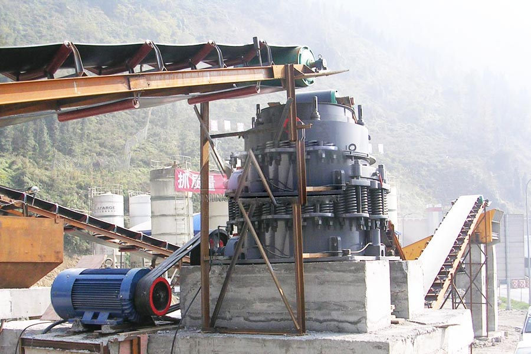

Construction waste crushing production line

Mobile construction waste crushing station for urban construction waste crushing.
crushers for iron ore
crushers for iron ore. Iron ore crusher, iron ore crusher / mill price, iron ore processing equipment manufacturers, iron ore processing production line includes: crushing, grinding, beneficiation three processes. Mainly in iron ore processing equipment used in iron ore crusher, ore mills, iron ore crusher and so on.
Iron ore crusher, ore crusher, ore crusher, iron ore crusher, CAG produce iron ore crusher (also known as cone crusher) is an iron ore will be progressively broken, from chunks of raw iron ore (about 500mm) progressively crushing fines to millimeter new crushing equipment.
The most commonly used crushers and grinding mills in iron ore crushing and grinding process for iron ore mining are jaw crusher, cone crusher, hammer crusher and ball mill, ultrafine grinding mill, etc. In iron ore mining, miner usually choose a complete iron ore crushing plant for metallurgy. At present, the most popular iron ore production line consists of two jaw crushers. After beening crushed, the material will be transported for the magnetic separation, and then into the ball mill for grinding

Magnetite is a ferric magnetic mineral with chemical formula Fe3O4, one of several iron oxides and a member of the spinal group. The chemical IUPAC name is iron(II,III) oxide and the common chemical name ferrous-ferric oxide. The formula for magnetite may also be written as FeO·Fe2O3, which is one part wetsuit (FeO) and one part hematite (Fe2O3). This refers to the different oxidation states of the iron in one structure, not a solid solution.
Hematite is also a ferric whose main gradient is Fe2O3. It is dull-red and the most common iron compound. During to the different formations, hematite is divided into Red hematite, Secular hematite, micaceous hematite and Red Ocher, etc.
Tanzania iron ore crusher suppliers. Iron ore crusher price, CAG produce mainly iron ore crusher cone crusher. This crusher has a variety of design approach, and can be selected in accordance with the actual use of the user.
Limonite is an ore consisting in a mixture of hydrated iron(III) oxide-hydroxide of varying composition. The generic formula is frequently written as FeO(OH)·nH2O, although this is not entirely accurate as limonite often contains a varying amount of oxide compared to hydroxide.
Iron Ore Crusher
Iron ore cone crusher is one of the most high efficiency iron ore crusher. Comparing with other iron crusher, iron ore cone crusher with high-efficiency has excellences for iron ore crushing, high productions and low maintenance. The long force arm designed into the cone provides greater iron ore crushing force.
Tanzania iron ore crusher for sale. Iron ore mobile crusher is developed according to novel series iron ore crushing equipment’s design idea, which expands the concept field of coarse crushing and fine crushing. xsm iron mobile crusher is designed based on the conception of fully adapting various iron crushing condition, eliminating obstacles caused by location, environment, foundation configuration, consequently providing simple, efficient, low-cost crushing equipment. Our iron ore mobile crusher includes cone crusher series mobile crusher, impact crusher series mobile crusher, jaw crusher series mobile crusher and crawler type mobile crusher. This series iron ore crusher really supply simpler, higher efficient lower cost machines for clients.
Mining crusher, iron ore crusher, hammer crusher, crusher equipment vertical shaft impact crusher hammer crusher crushing impact crusher heavy hammer crusher impact crusher compound crusher iron ore beneficiation equipment dry sorter mine shaker spiral chute.
Tanzania iron ore crusher price. Iron ore crusher, ore crusher, iron ore crusher, ore crushing equipment, CAG as domestic mining machinery industry leader, has been committed to the development of energy-efficient equipment for iron ore crusher iron Tanzania ore market.
Leave Me A Message, Now
If you have any questions regarding equipment prices, production line configuration or other problems, you can send a message to us, we will contact you soon.